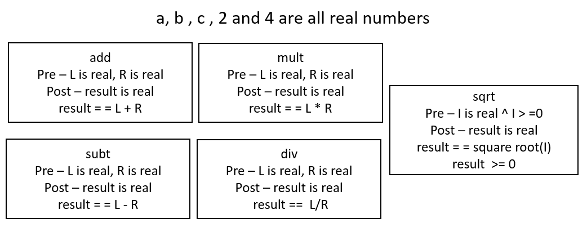
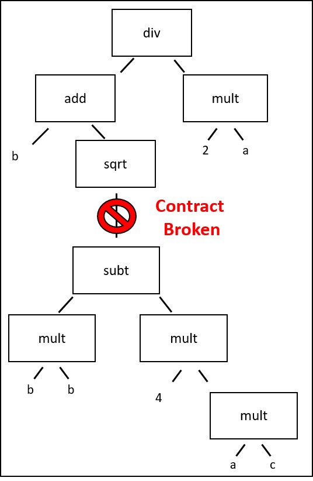
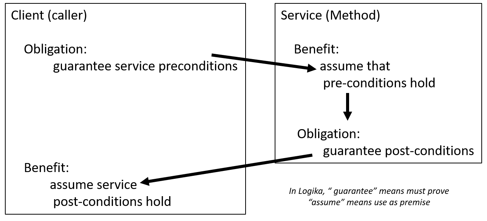

A function or procedure (from here forward function unless the distinction is relevant) is a named body of commands that does significant work. It may take parameter and or return values. It is analogous to methods or even classes in C# or Java. When we define a function, we should summarize its knowledge-production capabilities. This is critical, because we assemble a program by connecting a collection of functions, and therefore must know what they are capable of doing.
As you reviewed in calculus, a function maps each element of a domain to a single
element of a co-domain. So the equation for a line y = ax + b is a function
mapping real-numbers to real numbers, as long as each x maps to exactly one
y (no vertical lines). Because of this, a methods/subroutines which return
a value are often referred to as “functions”.
But as you have seen in C# and Java, there are functions which return nothing, i.e. void-type (Unit-type in Logika). These functions may change no programmatic values ( Java’s system.out.println()) or they may change class fields (like setters in Java). In non-object oriented programming, like C, they may even change global variables. We call a function that updates a global variable, a procedure (it may also have a return value). For those with only an object oriented background, a global variable is analogous to a public static <class-field>; it is globally visible and mutable.
Note
Traditionally, “function” refers to a method with a non-Unit (non-void) return type, where as “procedure” has a Unit (void) return type. Readers should be aware that there are contemporary programming languages that have different syntax and semantics for functions and procedures.
Whether implicitly or explicitly, we create contracts with every function we construct. We intend, that as long as the parameters passed in meet certain conditions, the function will produce a particular effect. This effect can be achieved by manipulating shared data and/or returning values.
So we can think of a program (the client) composing a solution to a problem. Consider a program that calculates a real-root of the quadratic equation.
Which may result in a LISP-esque program like this:
(defun root1 (a, b, c)
(div (add (b) (sqrt (subt (mult (b) (b))
(mult( (4) (mult (a) (c))))))
(mult (2) (a))))
)
; we just calculate the "b +" root
Here the client, function root1, knows the values of a, b, c and has access to math services
{div(ide), add, sqrt[square root], subt(ract), mult(iply)}. The implicit
contract for the binary operators is something like.
add (x) (y) – provided two real numbers x and y, add returns the real number value x + y
and for the unary operator
sqrt (x) – provided any positive real number x, sqrt returns the positive real square root of x
The client has no insight on how these functions accomplish their objectives only the preconditions for their use, and the conditional guarantees (post-conditions) made about the returned value.
To see if this program is valid, the client must ensure that the precondition of each service is met. For this program, it is not necessarily the case that all service preconditions are met. We will discuss which one fails to have its precondition met latter.
A function is a “mini-program”: it has inputs, namely the arguments assigned to its parameters, and it has outputs, namely the information returned as the function’s answer. It acts like a logic gate or chip, with “input wires” and “output wires”.
Here is an example that shows the format we use for writing a function:
1import org.sireum.logika._
2
3def divides( a: Z, b: Z) : B = {
4 l"""{
5 pre b != 0
6 post result == (a % b == 0)
7 }"""
8 val ans: B = (a % b == 0)
9 return ans
10}
Immediately following the definition there is a proof block that contains the precondition, post-condition, and the modifies clauses.
The precondition, which is optional, states the situations under which the
function operates correctly. It generally constrains the values of the parameters
and any global variables (think C# class fields or properties) to ensure
the function operates properly. Logika accepts both the keywords pre and
requires to start the precondition definition. Multiple requirements may be
stated on separate lines–this allows them to be proven/used individually
in proof blocks. Logika will throw an error if preconditions are not proven
before calling a function.
Next, similar to loops, if a function modifies parameters or global values,
it must list them in a modifies clause. In addition to the loop-like features,
Logika will capture a <var_name>_in snapshot each variable listed in the
modified clause. This facilitates comparisons between current and “original” values.
_in values are only captured for items listed in the modified clause.
Finally, the post-condition (post or ensures) states what the function has
accomplished when it terminates. Like preconditions it may contain multiple
lines. Logika will throw an error if post-conditions are not proven
before leaving a function. Logika uses the keyword result to refer to the
object (if any) returned by the function. This shorthand only exists in the
proof-block following the function’s definition.
It is an excellent practice to discuss the “final” values of anything mentioned in the “modifies” block, as well as “result” so users of the function understand what the function has accomplished.
The function’s specification consists of its header line and pre- and post- conditions and the modifies block. This tells us how to use the function correctly: (A comment with the informal description is also nice to have.) Here is the specification for the above function:
1def divides( a: Z, b: Z) : B = {
2// Determines if a is evenly divisible by b
3 l"""{
4 pre b != 0
5 post result == (a % b == 0)
6 }"""
The specification tells us what we need to know to use the function correctly. The person/program who calls the function is not supposed to read the function’s code to know how to use the function. This is especially crucial when you use a function from a library that was written by someone else – ideally, you should not read the library’s code to learn how to call the library’s functions!
In the above example, the client can tell that a and b are not modified
so can deduce that the returned result does indeed check if b divides a.
To call the function, we supply arguments that bind to the function’s parameters, and we supply a variable that is the target for the returned answer and we ensure any preconditions for the parameters are met. We correctly call the function like this:
1import org.sireum.logika._
2
3def divides( a: Z, b: Z) : B = {
4 l"""{
5 pre b != 0
6 post result == (a % b == 0)
7 }"""
8 val ans: B = (a % b == 0)
9 return ans
10}
11
12val x : Z = readInt()
13val y : Z = readInt()
14assume (y !=0)
15
16val isDiv: B = divides(x, y)
17
18if (isDiv){
19 println( y, " divides ", x)
20} else {
21 println( y, " does not divide ", x)
22}
To call the function, we must prove the function’s precondition at the point of call for its parameters. As our reward for establishing the precondition, we receive in return the post-condition.
A proof of this is
1import org.sireum.logika._
2
3val x : Z = readInt()
4val y : Z = readInt()
5assume (y !=0)
6l"""{
7 1. y != 0 premise // prove divides pre-condition
8}"""
9val isDiv: B = divides(x, y)
10assert ( isDiv == (( x % y ) == 0))
11
12if (isDiv){
13 println( y, " divides ", x)
14} else {
15 println( y, " does not divide ", x)
16}
17
18def divides( a: Z, b: Z) : B = {
19 l"""{
20 pre b != 0
21 post result == (a % b == 0)
22 }"""
23 l"""{
24 1. b != 0 premise // we assume this (use it as a premise)
25 // because we know pre-cond must hold here
26 }"""
27
28 val ans: B = (a % b == 0)
29 l"""{
30 1. b != 0 premise
31 2. ans = (a % b == 0) premise // prove post-condition holds immediately
32 // before the return statement
33 }"""
34
35 return ans
36}
In contrast, we cannot presume divides’ post-condition if we eliminate the
assume ( y != 0 ). Try it and see if Logika will accept the proof.
Since we did not prove y != 0 as a precondition for applying divides,
we cannot assert the post-condition after the call.
Literally, we have no knowledge of what the function produces in this situation
– perhaps the call will “crash” (generate an exception)!
Let us again consider the program which calculates the real roots of the quadratic equation. The client’s knowledge of values and services’ contracts looks something like this:
and a call tree based on the equation for root1 is
As mentioned when the program was introduced, there is a problem. In this case,
the problem is with meeting the contract for sqrt. The precondition
for sqrt is that its input is real and non-negative. However, the post-condition
for subt does not guarantee that it’s result is positive, only that the result
is a real number.
Potential solutions include: adding a pre-condition to root1, requiring the discriminant (b^2 - 4ac) to be positive; and, adding an if-condition which only calculates the root if the discriminant is positive.
Here is a summary of what we have developed so far.
Given a function, f, with a pre-post specification, we must show that the
presumption of the precondition at the beginning of the function’s body lets us
prove the post-condition at the end of the body:
def f(<x:<type>>): return_type = {
l"""{
pre Q // where Q can mention x
<modifies ...> // as appropriate
post R // where R can mention result and x)
}"""
l"""{
1. Q premise // Here we know the pre-conditions hold
}"""
BODY
l"""{
... // prove R here, that is, the return-var
// and x have property R
}"""
return <var_name>
}
Outside of the function, f, we write f_pre for Q and f_post for
R.
Here is the schematic for a correct call of the function.
It is a variation of the assignment law:
l"""{ [e/x]f_pre }""" // prove the precondition, where e binds to parameter x
y = f(e) // y does not appear in e
l"""{
1. [y/result][e/x]f_post premise // presume the post-condition,
// where y gets result's value
2. [y_old/y][e/x]f_pre premise // knowledge before the call is revised
. . .
}"""
Recall that [e/x]f_pre defines a substitution of e for all occurrences
of x within formula f_pre.
Here is another example, an absolute-value function:
1import org.sireum.logika._
2
3def absValue(x: Z) : Z = {
4 l"""{
5 pre x != 0
6 post result > 0 ∧ (result == 0 - x ∨ result == x)
7 }"""
8 var ans: Z = 0
9 if (x < 0) {
10 ans = 0 - x
11 } else {
12 ans = x
13 }
14 return ans
15 }
The precondition is crucial to the success of the post-condition (that the answer is positive). We construct a proof that converts the knowledge in the precondition into the knowledge in the post-condition:
1import org.sireum.logika._
2
3def absValue(x: Z) : Z = {
4 l"""{
5 pre x != 0
6 post result > 0 ∧ (result ==0 - x ∨ result == x)
7 }"""
8 var ans: Z = 0
9 if (x < 0) {
10 ans = 0 - x
11 l"""{
12 1. x < 0 premise
13 2. ans = 0 - x premise
14 3. ans > 0 algebra 1 2
15 4. (ans = 0 - x) ∨ (ans == x) ∨i1 2
16 }"""
17 } else {
18 ans = x
19 l"""{
20 1. x != 0 premise
21 2. ¬(x < 0) premise
22 3. x > 0 algebra 1 2
23 4. ans = x premise
24 5. ans > 0 algebra 3 4
25 6. (ans = 0 - x) ∨ (ans == x) ∨i2 4
26 }"""
27 }
28 l"""{
29 1. ans > 0 premise
30 2. (ans = 0 - x) ∨ (ans == x) premise
31 3. ans > 0 ∧ ((ans = 0 - x) ∨ (ans == x)) ∧i 1 2
32 }"""
33 return ans
34 }
Now that the function is verifies, and therefore satisfies its specification, we can call it:
1import org.sireum.logika._
2
3def absValue(x: Z) : Z = {
4 l"""{
5 pre x != 0
6 post result > 0 // write on 2 lines so
7 (result ==0 - x ∨ result == x) // we don't have to disassemble them
8 }"""
9 var ans: Z = 0
10 if (x < 0) {
11 ans = 0 - x
12 l"""{
13 1. x < 0 premise
14 2. ans = 0 - x premise
15 3. ans > 0 algebra 1 2
16 4. (ans = 0 - x) ∨ (ans == x) ∨i1 2
17 }"""
18 } else {
19 ans = x
20 l"""{
21 1. x != 0 premise
22 2. ¬(x < 0) premise
23 3. x > 0 algebra 1 2
24 4. ans = x premise
25 5. ans > 0 algebra 3 4
26 6. (ans = 0 - x) ∨ (ans == x) ∨i2 4
27 }"""
28 }
29 return ans
30 }
31
32
33var n : Z = readInt()
34var m : Z = 0
35if (n!=0) {
36 l"""{
37 1. n != 0 premise
38 }"""
39 m = absValue(n)
40 l"""{
41 1. m > 0 premise
42 }"""
43}
44l"""{
45 1. m > 0 ∨ ¬(n!=0) premise
46 2. {
47 3. m > 0 assume
48 4. n = 0 ∨ m > 0 ∨i2 3
49 }
50 5.{
51 6. ¬(n!=0) assume
52 7. n = 0 algebra 6
53 8. n = 0 ∨ m > 0 ∨i1 7
54 }
55 9. n = 0 ∨ m > 0 ∨e 1 2 5
56}"""
57assert (n == 0 | m > 0)
Function specifications are critical to software libraries. Every library component simply must have a specification that describes how to connect the component into an application. Often the specifications are written in English, but underlying the English descriptions are the pre-post-conditions illustrated in this section.
When you call a function that someone else wrote, you rely on to tell you how the function behaves. (In many cases, you can’t read the code, e.g., .NET components) If you the person writing the function for others to use, you supply the function’s specification. You can calculate the specification using the laws we studied in the previous chapter. But better still, you should start with the specification and write the function so that it matches the specification.
You start by stating, in English or otherwise, the function’s goal. You study the goal and consider how to meet it; you write the code. You take note of the requirements your function needs on its entry parameters and global variables to reach the goal. Finally, you apply the programming-logic laws to show that the coding matches the specification.
Here is a simplistic example.
Say you must write a function that receives two numbers as inputs and selects
the maximum, or larger, of the two as the function’s output.
The specification of the function, max, might look like this:
1import org.sireum.logika._
2
3def max(x : Z, y : Z) : Z = {
4 // max selects the larger of x and y and returns it
5 l"""{
6 pre ???
7 post (result = x ∨ result = y) ∧ (result >= x ∧ result >= y)
8
9 }"""
10
11 ... some code
12 }
You must write the code for function max so that it meets the post-condition.
Along the way, you might require some restrictions on x and y for your
solution to work.
These would be listed in the precondition.
The logical operators in the post-condition sometimes give us hints how to code
the function.
Here, we see that the function’s answer will be either x or y,
suggesting that the function will use assignment commands of the form,
ans = x and ans = y.
We also see that there is an “or” operator in the specification.
This suggests that we will require an if-command to choose which of the two
assignments to use.
Although it is not an exact science, we can move from the post-condition to this
possible coding:
1import org.sireum.logika._
2
3def max(x : Z, y : Z) : Z = {
4 // max selects the larger of x and y and returns it
5 l"""{
6 pre ???
7 post (result = x ∨ result = y) ∧ (result >= x ∧ result >= y)
8
9 }"""
10 var rtrn: Z = 0
11 if (x >= y) {
12 rtrn = x
13 } else {
14 rtrn = y
15 }
16 return rtrn
17 }
Now, we use the laws for assignments and conditionals to compute whether a
precondition is needed that places restrictions on x and y so that the
function behaves properly.
What we see here is that our coding works correctly. No precondition is required.
1import org.sireum.logika._
2
3def max(x : Z, y : Z) : Z = {
4 // max selects the larger of x and y and returns it
5 l"""{
6 ensures (result = x ∨ result = y)
7 (result >= x ∧ result >= y)
8 }"""
9 var rtrn: Z = 0
10 if (x >= y) {
11 rtrn = x
12 l"""{
13 1. x >= y premise
14 2. rtrn = x premise
15 3. rtrn = x ∨ rtrn = y ∨i1 2
16 4. rtrn >= x algebra 2
17 5. rtrn >= y algebra 1 2
18 6. rtrn >= x ∧ rtrn >= y ∧i 4 5
19 }"""
20 } else {
21 rtrn = y
22 l"""{
23 1. ¬ (x >= y) premise
24 2. rtrn = y premise
25 3. rtrn = x ∨ rtrn = y ∨i2 2
26 8. y > x algebra 1
27 4. rtrn >= x algebra 2 8
28 5. rtrn >= y algebra 1 2
29 6. rtrn >= x ∧ rtrn >= y ∧i 4 5
30 }"""
31 }
32 l"""{
33 1. rtrn = x ∨ rtrn = y premise
34 2. rtrn >= x ∧ rtrn >= y premise
35 }"""
36
37 return rtrn
38 }
Now, we have a function — a component — that others can insert into their programs.
Here is a precise statement of how to reason backwards from a goal across a function call. First, given the specification,
def f(x:?): ? = {
l"""{
requires Q
ensures R
}"""
If a call to f is meant to achieve a goal, G, we reason backwards from
G to its subgoal like this:
L"""{
subgoal: [e/x]f_pre ^ ([e/x][y/ans]f_post → G)
}"""
y = f(e) // y does not appear in argument e
l"""{
goal: G
}"""
That is, for the call, f(e), to accomplish G, it must be the case that
f’s post-condition implies G and that we can prove f’s precondition
holds true (so that we can call f).
An example:
def max(x : Z, y : Z) : Z = {
// max selects the larger of x and y and returns it
l"""{
ensures (result = x ∨ result = y)
(result >= x ∧ result >= y)
}"""
and the program
var a : Z = readInt()
var b : Z = readInt
"""{ subgoal: ??? }"""
var c: Z = recip(a)
"""{ goal: c < 7 }"""
we compute that the subgoal is a > 7 ^ b > 7 → c > 7).
This tells us what assert or if command to add to our program:
var a: Z = readInt()
var b: Z = readInt()
assert ( a > 7 | b > 7)
That is, if we expect the computed maximum of 2 integers to be greater than 7, we need to ensure at least one of the integers is greater than 7.
Note
Some languages, especially those derived from Pascal (ex: Ada), have strict syntax a semantic rules governing functions and procedures–they cannot be interchanged. In many functional languages, functions are evaluated for their return value and procedures for their side-effect. Most object oriented languages are more relaxed and you may see the terms function and procedure used interchangeably.
Recall we use “procedure” to refer to functions which use or change global
values. For example, fpm is global to convert2Feet here:
1import org.sireum.logika._
2
3var fpm : Z = 5280 // feet per mile
4
5var miles: Z = readInt()
6
7var totalFeet : Z = 0
8if ( miles >= 0 ){
9 totalFeet = convert2Feet(miles)
10}
11
12def convert2Feet(m : Z): Z ={
13 val rtrn: Z = m * fpm
14 return rtrn
15}
A global variable “lives” before a procedure is called and lives after the
function finishes.
In the above example, fpm is defined before the procedure convert2Feet
is called, and it exists after the procedure exits.
In contrast, fpm is local here:
1import org.sireum.logika._
2
3var miles: Z = readInt()
4var totalFeet : Z = 0
5if ( miles >= 0 ){
6 totalFeet = convert2Feet(miles)
7}
8
9def convert2Feet(m : Z): Z ={
10 var fpm : Z = 5280 // feet per mile
11 val rtrn: Z = m * fpm
12 return rtrn
13}
A global variable that is read (but not updated) by a procedure body can be safely used in the procedure’s pre- and post-conditions; it acts just like an extra parameter to the function:
1import org.sireum.logika._
2
3var fpm : Z = 5280 // feet per mile
4
5var miles: Z = readInt()
6var totalFeet : Z = 0
7if ( miles >= 0 ){
8 totalFeet = convert2Feet(miles)
9}
10
11def convert2Feet(m : Z): Z ={
12 l"""{
13 requires m >= 0
14 fpm > 5200
15 ensures result = m * fpm
16
17 }"""
18 val rtrn: Z = m * fpm
19 return rtrn
20}
21
However, we must restrict all calls to the procedure so that the call does not use the
global variable as the target of the function’s answer.
That is, totalFeet = convert2Feet(5) is ok, and so is totalFeet = convert2Feet(fmp),
but fpm = convert2Feet(5) is not.
In the Logika language, every global variable that is updated by a procedure must
be listed in the modifies line that is in the Logika proof-block following the
procedure’s signature.
Here is a simple but important example: a timer that counts down to zero.
The init and tick procedures maintain the global variable time. tick
requires that initial time (time_in) is greater than or equal to zero; and promises that if
it is strictly greater than 0, tick will decrement the time by 1. init
requires that the start ticks be greater zero; and promises that
time will be set to the value provided.
1import org.sireum.logika._
2
3 var time: Z = 0
4 l"""{
5 1. time == 0 premise
6 2. time >= 0 algebra 1
7 }"""
8
9 def tick() : Z = {
10 l"""{
11 pre time >= 0
12 modifies time
13 post time >= 0
14 time_in > 0 → (time = time_in -1)
15 }"""
16 l"""{ 1. time >= 0 premise }"""
17 if (time != 0) {
18 time = time - 1
19 l"""{
20 1. time_old != 0 premise
21 2. time_old >= 0 premise
22 3. time_old > 0 algebra 1 2
23 4. time_old = time_in premise
24 5. time == time_old - 1 premise
25 6. time >= 0 algebra 3 5
26 7. time == time_in -1 algebra 4 5
27 8. {
28 9. time_in > 0 assume
29 10. time == time_in -1 premise
30 }
31 11. time_in > 0 → (time = time_in -1) →i 8
32 }"""
33 }else {
34 print("RING RING RING")
35 l"""{
36 1. time = time_in premise
37 2. time >= 0 premise
38 3. ¬(time != 0) premise
39 4. time == 0 algebra 3 2
40 5. {
41 6. time_in > 0 assume
42 7. ⊥ algebra 4 6 1
43 8. time == time_in -1 ⊥e 7
44 }
45 9. time_in > 0 → (time = time_in -1) →i 5
46 }"""
47 }
48 var rtrn: Z = time
49 return rtrn
50 }
51
52 def init(starttime:Z) : Unit={
53 l"""{
54 pre starttime > 0
55 modifies time
56 post time >= 0
57 }"""
58 time = starttime
59 l"""{
60 1. starttime > 0 premise
61 2. time == starttime premise
62 3. time >= 0 algebra 1 2
63 }"""
64 }
65
66
67 l"""{
68 1. time >= 0 premise
69 2. 10 > 0 algebra
70 }"""
71 init(10)
72 l"""{ 1. time >= 0 premise }"""
73 var a: Z = tick()
74 l"""{ 1. time >= 0 premise }"""
75 a = tick()
76 l"""{ 1. time >= 0 premise }"""
77 a = tick()
78 l"""{ 1. time >= 0 premise }"""
Each of the procedures can change variable time, and each time a function
finished, there is a post-condition that time >= 0.
This is an invariant; here the invariant property is that time stays
nonnegative.
This next example is similar. The procedure that withdraws money from a bank account must never let the balance go negative:
1import org.sireum.logika._
2
3var balance: Z = 100
4def withdraw(howmuch: Z) : Z = {
5 // withdraw removes howmuch from balance
6 l"""{
7 pre howmuch >= 0
8 balance >= 0
9 modifies balance
10 post balance == balance_in - result ^ balance >= 0
11 }"""
12 var cash : Z = 0
13 if (howmuch <= balance) {
14 cash = howmuch
15 }else{
16 cash = balance
17 }
18 balance = balance - cash
19 return cash
20 }
withdraw’s pre- and post-conditions are carefully written to ensure that
the procedure is used correctly.
Recall that balance_in means the value of global variable balance on
procedure entry.
We will return to both these examples shortly.
Here is a precise statement of the law we use for procedures:
g = ... // the global variable
def f(x : <type>) : <type> = {
l"""{
pre Q (where assertion Q mentions x and g) This is f_pre.
modifies g, x (as applicable)
post R (where R mentions result, x, g, and g_in) This is f_post.
}"""
BODY
}
To invoke the procedure, we prove the precondition:
l"""{
[e/x]f_pre
}"""
y = f(e) // y and g do not appear in e, and y and g are distinct
l"""{
1. [y/ans][e/x][g_old/g_in]f_post premise
2. [y_old/y][g_old/g][e/x]f_pre premise
...
}"""
Since global variable g acts as a second answer variable, g cannot
appear in argument e nor can it be the same as y.
A global variable is often shared by more than one procedure, and the procedures must cooperate and keep the global variable in proper shape for shared use. For this reason, a global variable often has attached to it a global-variable invariant that asserts a property of the variable’s value that must be preserved by every procedure that updates the variable.
Earlier, we saw a timer module that maintained a nonnegative value for time.
It is best to assert that time >= 0 is a global invariant.
Then, each of the two procedures can assume the invariant when they execute.
(And, each procedure must ensure the invariant is still holding true when they
exit!)
Logika supports a concept of global invariant. If a global value is given an invariant (see lines 11 - 13 below), Logika will enforce that requirement every time a function is called and when the procedure returns. Note, you must prove the invariant before claiming it.
Here is the timer example reworked:
1import org.sireum.logika._
2
3 var time: Z = 0
4 l"""{
5 1. time == 0 premise
6 2. time >= 0 algebra 1
7 }"""
8
9 // This invariant will be checked time a function or procedure exits
10 // It is not checked if the main-body changes the value of time
11 l"""{
12 invariant time >= 0
13 }"""
14
15
16 def tick() : Z = {
17 l"""{
18 requires time >= 0
19 modifies time
20 ensures time_in > 0 → (time = time_in -1)
21 }"""
22 l"""{ 1. time >= 0 premise }"""
23 if (time != 0) {
24 time = time - 1
25 l"""{
26 1. time_old != 0 premise
27 2. time_old >= 0 premise
28 3. time_old > 0 algebra 1 2
29 4. time_old = time_in premise
30 5. time == time_old - 1 premise
31 6. time >= 0 algebra 3 5
32 7. time == time_in -1 algebra 4 5
33 8. {
34 9. time_in > 0 assume
35 10. time == time_in -1 premise
36 }
37 11. time_in > 0 → (time = time_in -1) →i 8
38 }"""
39 }else {
40 print("RING RING RING")
41 l"""{
42 1. time = time_in premise
43 2. time >= 0 premise
44 3. ¬(time != 0) premise
45 4. time == 0 algebra 3 2
46 5. {
47 6. time_in > 0 assume
48 7. ⊥ algebra 4 6 1
49 8. time == time_in -1 ⊥e 7
50 }
51 9. time_in > 0 → (time = time_in -1) →i 5
52 }"""
53 }
54 var rtrn: Z = time
55 return rtrn
56 }
57
58 def init(starttime:Z) : Unit={
59 l"""{
60 pre starttime > 0
61 modifies time
62 }"""
63 time = starttime
64 l"""{
65 1. starttime > 0 premise
66 2. time == starttime premise
67 3. time >= 0 algebra 1 2
68 }"""
69 }
70
71 l"""{
72 1. time >= 0 premise
73 2. 10 > 0 algebra
74 }"""
75 init(10)
76 l"""{ 1. time >= 0 premise }"""
77 var a: Z = tick()
78 l"""{ 1. time >= 0 premise }"""
79 a = tick()
80 l"""{ 1. time >= 0 premise }"""
81 a = tick()
82 l"""{ 1. time >= 0 premise }"""
If you violate the invariant in the main portion of the program, Logika will not complain until you go to call a function.
In an object-oriented language, when a global (“class”) variable and its methods (“functions”) are defined within a class, the global-variable invariant is called the class invariant.
Here’s a pseudo-code example, a class that is embedded in a toy bank into which a child inserts ten-cent coins. (The bank is a “reactive system” that processes “coin-insertion events”!) The class enforces its invariant – that’s its mission.
1class DimesBank { // maintains a toy bank
2
3 // Class fields
4 var dimes: Z = 0 // how many coins inserted so far into the bank
5 var money: Z = 0 // how much the coins are worth
6 l"""{
7 1. money == 0 premise
8 2. dimes == 0 premise
9 3. money == dimes * 10 algebra 2 1
10 }"""
11 l"""{
12 invariant money == dimes * 10
13 }"""
14 // the class maintains this invariant property:
15 // the handler method below can assume the invariant on entry,
16 // and the method must ensure that the invariant holds on exit
17
18 def handleCoinInsertion(howmany: Z) : Unit ={
19 l"""{
20 pre howmany >= 0
21 modifies money, dimes
22 }"""
23 /// we introduce the invariant as a premise when needed:
24 l"""{
25 1. money == dimes * 10 premise
26 }"""
27 dimes = dimes + howmany
28 l"""{
29 1. money == dimes_in * 10 premise
30 2. dimes == dimes_in + howmany premise
31 3. money + (howmany * 10) == dimes * 10 algebra 1 2
32 }"""
33 // the invariant is broken here, but the next command restores it:
34 money = money + (howmany * 10)
35 l"""{
36 1. money_in + (howmany * 10) == dimes * 10 premise
37 2. money == money_in + (howmany * 10) premise
38 3. money == dimes * 10 algebra 2 1
39 }"""
40 } /// end method
41 } // END CLASS
When you code a class, first decide on the class’s fields (its “attributes”) and write down the class invariant. Then, define and code the functions so that they maintain the invariant.
Here is a second example, a class that models a bank account. The account’s balance should always be kept nonnegative:
1import org.sireum.logika._
2
3// Class Bank Account
4 // The global variable, the money in a bank balance:
5 var balance: Z = 0
6 l"""{
7 1. balance == 0 premise
8 2. balance >= 0 algebra 1
9 }"""
10 // the global invariant:
11 l"""{
12 invariant balance >= 0 // this property is currently true, and
13 }""" // we want the methods to preserve it
14
15 def deposit(howmuch: Z) : Unit ={
16 //deposit adds howmuch to balance
17 l"""{
18 pre howmuch >= 0
19 modifies balance
20 post balance == balance_in + howmuch
21 }"""
22 // balance_in is the value of balance when the method was entered
23
24 l"""{
25 1. balance >= 0 premise // the globalinv holds on entry
26 2. howmuch >= 0 premise // the precondition
27 3. balance == balance_in premise // the value of balance on entry
28 }"""
29 balance = balance + howmuch
30 l"""{
31 1. balance == balance_old + howmuch premise
32 2. balance_old >= 0 premise
33 3. howmuch >= 0 premise
34 4. balance_old == balance_in premise
35 5. balance == balance_in + howmuch algebra 4 1
36 6. balance >= 0 algebra 1 2 3
37 }"""
38 // The last line asserts that the global invariant is preserved
39 // at the exit, and the postcondition is proved, too.
40 }
41
42
43 def withdraw(howmuch: Z) : Z ={
44 // withdraw removes howmuch from balance
45 l"""{
46 pre howmuch >= 0
47 modifies balance
48 post balance == balance_in - result
49 }"""
50 l"""{
51 1. balance >= 0 premise // the globalinv holds on entry
52 2. howmuch >= 0 premise // the precondition
53 3. balance == balance_in premise // the value of balance on entry
54 }"""
55 var cash : Z = 0
56
57 if (howmuch <= balance) {
58
59 balance = balance - howmuch
60 cash = howmuch
61 l"""{
62 // prove here balance == balance_in + cash and balance >= 0
63 }"""
64 } else {
65 cash = 0
66 l"""{
67 // prove here balance == balance_in + cash and balance >= 0
68 }"""
69 }
70 return cash
71 }
72
73 def getBalance() : Z ={
74 // getBalance returns the current balance
75 l"""{
76 post result == balance
77 }"""
78 var ans: Z = balance
79 l"""{
80 1. ans == balance premise
81 }"""
82 return ans
83 }
All the class’s functions pledge to keep balance nonnegative.
Assuming that no other program commands update the balance, the proofs
must ensure that balance’s global invariant holds always.
Whenever a module or class holds a data structure, there always should be a global invariant that states the critical properties of the structure that must be maintained. The procedures that maintain the data structure pledge to preserve its invariant.
This is the technique used in modular and object-oriented programming, where a data structure, its global invariant, and the data structure’s maintenance procedures/functions are placed together. Since only the maintenance procedures update the global variable and preserve the invariant, the rest of the program can always rely on the global invariant to hold true Without this convention, it is impossible to do component-based programming.
Here is the law used in the above example:
g = ... # the global variable
l"""{
// some proof of I_g
}"""
l"""{
invariant I_g
}""" # must be proved true here
def f(x):
l"""{
pre Q (where assertion Q mentions x and g) This is f_pre.
modifies g, x (as applicable)
post R (where R mentions result, x, g, and g_in) This is f_post.
}"""
l"""{
1. Q premise
2. I_g premise
...
}"""
BODY
l"""{
prove R
prove I_g
}"""
}
For the procedure’s invocation, we deduce [e/x]pre_f to get the result.
Since global variable g acts as a second answer variable, g cannot
appear in argument e nor can it be the same as y.
l"""{
[e/x]pre_f // that is, Q_e,g
}"""
y = f(e) // y and g do not appear in e, and y and g are distinct names
l"""{
1. [y/ans][e/x][g_old/g_in]f_post premise
2. [y_old/y][g_old/g][e/x]f_pre premise
3. I_g globalinv
...
}"""
Further, provided that all assignments to global variable g occur only
within procedures that preserve its I_g, we can always assert I_g as
needed in the main program.
There are many other examples of modules/classes that use global invariants. Here are three obvious ones:
A spreadsheet program: a module holds a grid that models a spreadsheet, and the key invariant property is that the last cell in each row of the spreadsheet holds the sum of the numbers in that row. So, the functions that insert or change numbers in the cells of the spreadsheet must compute new totals for the rows so that the invariant is preserved.
A board game, like chess: a module holds a grid that models the chess board and the pieces placed on it. The global invariant is that the pieces correctly show the history of the moves made so far during the game. The functions that make moves and captures must preserve the invariant.
An animation: a module holds a three-dimensional space inhabited by one or more sprites (moving objects). The invariant is that no sprite can travel outside the dimensions of the space. The functions that insert, move, and delete sprites must preserve the invariant.
A key job when doing object-oriented programming is writing class invariants, that is, global invariants for the private fields in each class. When you design a class, define the fields (data structures) and their invariants before you write the functions that maintain the data structures and preserve the invariants.
All the techniques apply when the code inside a procedure body calls another procedure: as long as we establish the precondition for the called procedure, we can call it, and we obtain the post-condition as new knowledge in return. In this way, procedures can build on each others’ post-conditions.
It is interesting that a procedure can call itself, and we can reason about this in the same way that we use for any other procedure call. Here is a detailed example.
For integer n > 0, the factorial of n, written n! is defined as
1 * 2 * 3 * ...up to... * n.
It is the tradition to define 0! = 1, but factorials for negative integers
do not exist.
Factorial lists the number of permutations (combinations or “shuffles”), e.g.,
fact(3) = 6 notes there six permutations for arranging three items,
a, b, and c:
abc
bac
bca
acb
cab
cba
There is a profound recursive definition of factorial:
0! == 1
n! == (n-1)! * n, for n > 0
For example, we calculate 4! like this:
4! == 3! * 4
where 3! == 2! * 3
where 2! == 1! * 2
where 1! == 0! * 1
where 0! == 1
So...
0! == 1
1! == 0! * 1 = 1
2! == 1! * 2 = 2
3! == 2! * 3 = 6
and finally,
4! == 3! * 4 = 24
The process of counting downwards from 4! to 3! to 2! to 1! to
0! and assembling the answer as 1 * 1 * 2 * 3 * 4 can be programmed as a
function that repeatedly calls itself for the answers to 3!, 2!,
1!, etc.:
The easiest way to understand the computation of, say, factorialRec(3), is to draw
out the function calls, making a new copy of the called function each time it is
restarted, like this:
factorialRec(3) => n = 3
if n == 0 :
ans = 1
else :
a = factorialRec(n-1)
ans = a * n
return ans
Notice how the binding of argument 3 to parameter n is enacted with
the assignment, n = 3.
(This is how it is implemented within a computer, too.)
The code for factorialRec(3) activates a fresh copy of factorialRec with argument 2:
factorialRec(3) => n = 3
a = factorialRec(2) => n = 2
if n == 0 :
ans = a * n ans = 1
return ans else :
a = factorialRec(n-1)
ans = a * n
return ans
This generates another call (fresh copy of) factorialRec:
factorialRec(3) => n = 3
a = factorialRec(2) => n = 2
ans = a * n a = factorialRec(1) => n = 1
if n == 0 :
return ans ans = a * 2 ans = 1
return ans else :
a = factorialRec(n-1)
ans = a * n
return ans
This expands to:
factorialRec(3) => n = 3
a = factorialRec(2) => n = 2
ans = a * n a = factorialRec(1) => n = 1
return ans ans = a * n a = factorialRec(0) => n = 0
if n == 0 :
return ans ans = a * n ans = 1
return ans else :
. . .
return ans
We see a sequence, or “stack”, of activations of factorialRec, one per call.
Within a computer, an activation-record stack remembers the activations.
The call to factorialRec(0) returns an answer – 1:
factorialRec(3) => n = 3
a = factorialRec(2) => n = 2
ans = a * n a = factorialRec(1) => n = 1
return ans ans = a * n a = factorialRec(0) => return 1
return ans ans = a * n
return ans
This makes the most recent activation (copy) of factorialRec disappear, and the
returned answer is assigned to ans in the previous call:
factorialRec(3) => n = 3
a = factorialRec(2) => n = 2
ans = a * 3 a = factorialRec(1) => n = 1
return ans ans = a * 2 a = 1
return ans ans = a * n
return ans
allowing the previous call to return its answer to its caller:
factorialRec(3) => n = 3
a = factorialRec(2) => n = 2
ans = a * 3 a = factorialRec(1) => return 1
return ans ans = a * 2
return ans
You see the pattern – the calls are finishing in reverse order, returning the
partial answers, fact(0) = 1, fact(1) = 1, fact(2) = 2, and so on:
factorialRec(3) => n = 3
a = factorialRec(2) => n = 2
ans = a * n a = 1
return ans ans = a * n
return ans
and then:
factorialRec(3) => n = 3
a = factorialRec(2) => return 2
ans = a * n
return ans
and:
factorialRec(3) => n = 3
a = 2
ans = a * n
return ans
and finally:
factorialRec(3) => return 6
Within the computer, the code for factorialRec is not copied at each call –
instead, a new namespace (activation record) is generated for each call to
factorialRec.
When a call finishes, its answer is returned and its namespace is erased
(popped from the activation stack).
Every function has its own pre- and post- conditions. So, if a function calls itself, it can use its own pre- and post-conditions to deduce the properties of the answer computed by the self-call. This is remarkable and exactly correct.
Here is the desired specification of factorialRec:
l"""{
fact // axioms
def f(n: Z): Z
fZero. f(0) == 1
fPos. ∀x: Z x > 0 → f(x) == f(x - 1) * x
}"""
def factorialRec(n: Z): Z = {
l"""{ requires n ≥ 0
ensures result == f(n)
}"""
When factorialRec calls itself, we use the above pre- and post-conditions to deduce
what happens.
In the process, we deduce that the completed coding of factorialRec possesses
exactly these same pre- and post-conditions!
Recall again the “official definition” of n!:
0! == 1
n! == (n-1)! * n, for n > 0
Here is the deduction that factorialRec meets its stated pre- and post-conditions:
We did it!
The proof is not magic or trickery – notice that the call, factorialRec(n - 1),
uses an argument value that is different — one smaller than — argument n
used with factorialRec(n).
This style of recursion by counting-downward-by-ones-until-zero will be exposed
in the next chapter as an instance of mathematical induction.
The material you have studied in this class has several applications in the contemporary industrial practices of software and programming language design.
In 1986, Bertrand Myer introduced the contract as metaphor for software design, with particular application to the then novel object-oriented programming languages available and under development (see “Applying Design by Contract”, Bertrand Meyer, Computer, IEEE 1992–available for free if logged on from the .ksu.edu domain). The key idea is the both the client and the service derive benefits from the “contractual” obligations expressed by pre-conditions, post-conditions and invariants.
While a rigorous, formal use of design-by-Contract may only be seen in high-assurance system applications, the general practice of conceptualizing pre and post-conditions is a benefit during design.
If industry is using a design-by-contract, we need programming languages which support it. Optimally, we would like contracts to be enforced by the complier or interpreter.
Statically typed languages (C# and Java) enforce a kind of contract at compilation time. Dynamically typed languages (python and javascript), type contracts are not checked before execution and this can lead to run time errors, or the need for guard code to ensure “type correctness”.
// C# - static this program will never run
char[] a = { 'a','b','c','d'};
char b = 'z';
char c = a[b]; // this line will throw a compile error for type
// python - dynamic this program will run but with errors
a = [ 'a','b','c','d']
b = 'z'
c = a[b]; // this line will throw interpreter error at run time
// python with guard code (Defensive programming)
a = [ 'a','b','c','d']
b = 'z'
if (isinstance(b, int)):
c = a[b]; // runs but we don't know if 'c' got a value
Static type checking aids in soundness checking, but implementation does not guarantee that no runtime errors will occur. Consider this C# program
1public class Program {
2 public static void Main(string[] agrs){
3 string[] a = {"a","b","c"};
4 Foo(a)
5 }
6 private static void Foo(object[] a){
7 a[0] = 1
8 }
9}
This program compiles but throws a run type error. Since a string[] is an object[], the program compiles. However, the assignment on line 7 in Foo requires that the array be of a type into which the integer literal “1” can be implicitly coerced (int, double, etc.). Both inheritance and implicit coercion, the practice of allowing more precise types to “automatically convert” less precise types on assignment, complicate reasoning about a program. So even for enforcing type-contracts, type checking systems may not be sufficient.
Preconditions, post-conditions and invariants can all be “implemented” by a bunch of defensive coding. Services can check incoming global values and parameters, returning a sentinel value (or throwing an exception) if something does not pass. Clients can do the same to handle returns. This process has several disadvantages: it leads to code-bloat; it leads to bigger executables (compile time checks do not necessarily lead to bigger executables); bigger executables may lead to slower overall executions; and, the program is not very modular as a change in a service may lead to changing the defensive programming everywhere the service is called.
Design-by-contract would benefit from a more robust set of capabilities. Optimally the compiler would support pre- and post-conditions, invariants and quantifiers. There is at least one language, Eiffel, which has contracts as a first class citizens. Ada 2012 contains support for all these capabilities.
There are many more languages with library/environment extensions to at least minimally support the notions of pre- and post-conditions: C#, Java, Ruby and Javascript. A non-scientific survey the “state of the art, 2018” of design-by-contract support may be found on the LeadingAgile (a process consultant company) web site https://www.leadingagile.com/2018/05/design-by-contract-part-one/
We used a variety of laws for function definitions and calls.
Here is the simplest version, a forwards law where there is no updating to global variables:
def f(x: <type>) : <type> = {
l"""{
pre Q (where assertion Q can mention x) Call this, f_pre.
modifies ... (where parameters and globals are listed if modified)
post R (where assertion R can mention result and x) Call this, f_post.
} """
l"""{
1. Q premise
}"""
BODY
l"""{
... prove R here, that is, result and x have property R
}"""
}
Outside of the function, f, we write f_pre for Q and f_post
for R.
Here is the schematic for a correct call of the function:
l"""{
[e/x]f_pre // prove the precondition, where e binds to parameter x
}"""
y = f(e) // y does not appear in e
l"""{
1. [y/ans][e/x]f_post premise // presume the post-condition where
//y receives the result value
2. [y_old/y][e/x]f_pre premise
. . .
}"""
Recall that [e/x]f_pre defines a substitution of e for all
occurrences of x within formula f_pre.
The other two substitions explain how f_post is stated in terms of the
receiving variable, y, and how the entry premise is propagated after
the call.
When we use a procedure, that is, a function that updates a global variable, the laws become more complex, because the global variable acts like a second answer from the function. Every global variable should have an invariant property, and every function that uses the global variable should pledge to preserve that invariant property:
g = ... // the global variable
l"""{
... proof of I_g // the invariant property for g
}"""
l"""{
invariant I_g
}"""
def f(x: <type>) : <type> = {
l"""{
pre Q (where assertion Q can mention x) Call this, f_pre.
modifies ... (where parameters and globals are listed if modified)
post R (where assertion R can mention result and x) Call this, f_post.
} """
l"""{
1. Q premise
2. I_g premise
}"""
BODY // does not assign to x but may assign to g
l"""{
... prove R
... prove I_g
}"""
}
For the function’s invocation, we deduce [e/x]pre_f to get the result.
Since global variable g acts as a second answer variable, g cannot
appear in argument e nor can it be the same as y.
l"""{
[e/x]pre_f, that is, Q_e,g
}"""
y = f(e) // y and g do not appear in e, and y and g are distinct names
l"""{
1. [y/ans][e/x][g_old/g_in]f_post premise
2. [y_old/y][g_old/g][e/x]f_pre premise
3. I_g globalinv
...
}"""
Further, provided that all assignments to global variable ``g`` occur only
within functions that preserve its ``I_g``, we can always assert I_g as
needed in the main program.
If we wish to reason in a backwards fashion about function calls, we can use a different law. To keep it simple, assume no global variables are updated by the function. For the specification,
def f(x: <type>) : <type> = {
l"""{
pre Q (where assertion Q can mention x) Call this, f_pre.
modifies ... (where parameters and globals are listed if modified)
post R (where assertion R can mention result and x) Call this, f_post.
} """
if a call to f is meant to achieve a goal, G, we reason backwards
from G to its subgoal like this:
l"""{
subgoal: [e/x]pre_f ^ ([e/x][y/ans]post_f --> G)
}"""
y = f(e) // y does not appear in argument e
l"""{
goal: G
}"""
It is a good exercise to extend this backwards law to procedures. Try it.
This note was adapted from David Schmidt's CIS 301, 2008, Chapter 3 course note.
It was updated in 2018 by Dr John Hatcliff and George Lavezzi
to conform with Logika syntax and more closely match
KSU's CIS 301 course as taught in Spring 2018.
{kind=link}
{kind=link}
{kind=link}